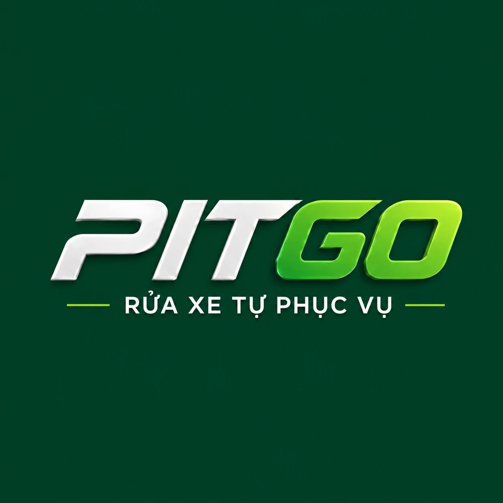

PITGO là mô hình rửa xe tự phục vụ tại Ninh Bình, Việt Nam. Khách tự chọn dịch vụ, tự kiểm soát thời gian và trả tiền theo thời gian sử dụng: rửa bao nhiêu, nạp bấy nhiêu.
Cơ sở 2: Bến xe khách Nam Thành, đường 30/6, cách cầu Bông Lau khoảng 500m. Mở cửa 24/7.
Hotline: 0855 406 416 · Email: pitgovietnam@gmail.com
Ứng dụng "PITGO" là công cụ nội bộ để PITGO tải video của chính mình lên Facebook và TikTok dưới dạng nháp (người quản lý duyệt rồi mới đăng), và trả lời bình luận trên bài viết của PITGO.
The "PITGO" app is an internal tool PITGO uses to upload its own videos to Facebook and TikTok as drafts for review before posting, and to reply to comments on PITGO's posts.